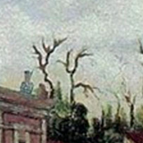
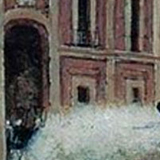

Museo Virtual
Independencia de México
Segunda Etapa
1811-1815
La llamada etapa de organización de la guerra de independencia de México comprende los acontecimientos bélicos y políticos que después del fusilamiento de Hidalgo y de otros lideres independentistas las riendas las tomo José María Morelos y Pavón quien fue un sacerdote nacido en Valladolid, ya que continuo con la lucha armada por lo tanto el ejército de Morelos se destacó por ser totalmente diferente que el ejército insurgente pues se caracterizó por ser mas disciplinado y con menos elementos, sin embargo este ejercito contaba con la misma estructura de personas al ataque quienes fueron personas dedicadas al campo, minería, la religión y la milicia, además se incluyeron grupos de africanos que dentro de los oficiales al mando se encontraban Vicente Guerrero, Guadalupe Victoria, Hermenegildo Galena, Mariano Matamoros y Nicolás Bravo que a partir de 1812 Morelos se destacó como líder insurgente ya que promovió el control de varias poblaciones
Es así que uno de los episodios mas relevante en esta lucha fue el 23 de enero de 1812 en el sitio de Cuautla, donde Morelos derroto en Tenancingo al brigadier Rosendo Porlier y después se retiro a Cuautla de Amilpas para esperar a Callejas, ya que tenia cerca de 4000 soldados mandados por Matamoros, Galeana y los Bravo, sin embargo los realistas contaban con tres divisiones mandadas por Callejas, Llano y Porlier porque estas fuerzas sumaban mas de ocho mil hombres, del mismo modo Morelos resistió los terribles asaltos desde el 18 de Febrero hasta el 2 de Mayo de 1812 que a causa de falta de elementos de guerra y alimentos, rompió el sitio salvando la mayor parte de sus tropas, es así que Morelos se replegó a Orizaba después a Oaxaca, donde nombro como su segundo al mando a Matamoros y lo hizo mariscal, los mismo que a Galeana y se fundó el periódico del Correo Americano del Sur, sin embargo Morelos se cuestionó que hacía falta un gobierno que unificara las fuerzas insurgentes por lo tanto dicto el documento Sentimientos de la Nación en Oaxaca entre el 26 de noviembre de 1812 y el 9 de febrero de 1813, redactado por Don Andrés Quintana Roo, para ser leído el 14 de septiembre de 1813 durante la apertura del congreso de Anáhuac den la ciudad de Chilpancingo, que planteaba entre otros puntos que América debería ser libre e independiente de España, así que como la esclavitud y la distinción por castas debía ser prohibida para siempre con el fin de que todos fueran iguales ante la ley y a partir de este congreso a Morelos se conoció como el Siervo de la Nación, sobrenombre que el acepto al rechazar el titulo de alteza serenísima que el congreso se lo había otorgado, que en este congreso se redactó una constitución que seria promulgada el 22 de octubre de 1814 en Apatzingán, en ella se declaraba la libertad de América mexicana, sin embargo esta no entro en vigor debido que la lucha contra los realistas continuaban, del mismo modo Morelos siguió la lucha que lo obligo tomar a Acapulco pero luego de perder una batalla en Tehuacán, Morelos cayo prisionero y murió fusilado el 22 de Diciembre de 1815 en Ecatepec, esto no fue causa para que la guerra no terminara.
Ejercicios didacticos
Rompecabezas
|
|
 |
|
 |
 |
|
|
|
Agrega un comentario